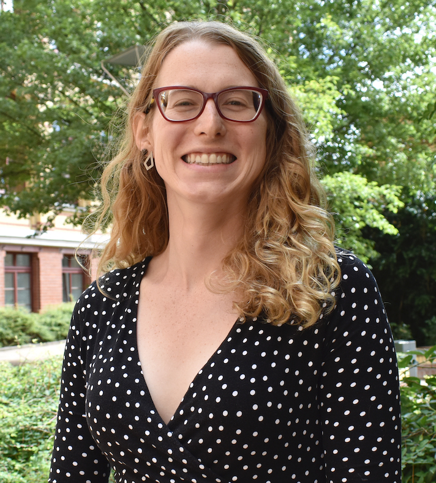

<!-- <div class="jumbotron"> -->
<div class="container-fluid">
<div class="row">
	<div class="col-lg-5">
	
	</div>
	<div itemscope itemtype="http://data-vocabulary.org/Person" class="col-lg-7">
	<p class="lead">Hi, I'm <span itemprop="name">Juliette Bruce</span>, Postdoctoral Research Associate at Brown University.</p>
	<p>My research interests lie in algebraic geometry, commutative
	algebra, and arithmetic geometry. In particular, I am interested in
	using homological methods to study the geometry of zero loci of
	systems of polynomials (i.e. algebraic varieties). I am also
	interested in studying the arithmetic properties of varieties over
	finite fields. Further, I am passionate about promoting inclusivity,
	diversity, and justice in the mathematics community.	
		<br><br>
		Before coming to Brown University, from 2020 to 2022, I was an NSF Postdoctoral Research Fellow at the University of Califronia, Berkeley. I was a graduate student at the University of 
		Wisconsin, Madison where I earned my Ph.D. in mathematics. My advisor was <a href="http://www.math.wisc.edu/~derman/">Daniel Erman</a>.
		For the 2020-2021 academic year I was also a postdoctoral fellow at MSRI.
		<div class="btn-group btn-group">		
			<a href="cv/julietteBruceCV.pdf" class="btn btn-primary">Curriculum Vitae</a>
		</div>
		 </p>
		
<!-- 
	<div class="btn-group btn-group">		
			<a href="cv/julietteBruceCV.pdf" class="btn btn-primary">Curriculum Vitae</a>
		</div>
 -->
	</div>
</div>
</div>
<!-- </div> -->
